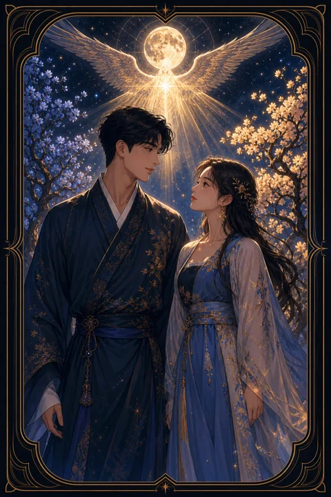

VI 연인 카드 — 사랑과 선택의 갈림길
연인 카드 한눈에 보기
연인 카드 상징 읽기

동네보살의 카드 그림은 전통 라이더–웨이트 덱의 뜻을 새 그림으로 옮긴 것입니다. 아래 상징 설명은 전통 덱의 그림을 기준으로 합니다.
연인 카드에는 벌거벗은 남녀가 마주 서 있고, 그 위로 커다란 날개를 펼친 천사가 축복을 내립니다. 아무것도 걸치지 않은 모습은 숨김없이 서로를 드러내는 솔직한 관계를 뜻합니다.
여인 뒤편의 나무에는 뱀이 감긴 열매가 달려 있습니다. 유혹과 욕망, 그리고 그 앞에서 무엇을 고를지 스스로 결정해야 하는 자유 의지를 상징합니다.
남자 뒤편의 나무에는 불꽃이 열매처럼 타오르는데, 이는 뜨거운 열정과 마음의 불을 나타냅니다. 두 사람 사이 멀리 솟은 산은 함께 넘어야 할 과제이자 사랑이 향할 높은 목표입니다. 머리 위의 밝은 해는 이 선택이 의식의 빛 아래에서 이루어진다는 뜻입니다.
천사는 치유를 뜻하는 라파엘로 알려져 있으며, 두 사람의 결합을 축복하고 서로의 상처를 어루만지는 존재입니다. 여인이 천사를 올려다보고 남자가 여인을 바라보는 시선의 방향은 감정과 이성이 더 높은 뜻으로 이어지는 흐름을 보여 줍니다.
연인 카드 정방향 뜻
정방향 연인은 마음과 마음이 맞닿는 조화로운 순간을 보여 줍니다. 좋아하는 사람과의 관계뿐 아니라 일, 친구, 동업자처럼 나와 가치관이 잘 맞는 상대를 만나는 흐름도 포함합니다.
동시에 이 카드는 선택의 카드입니다. 두 가지 길 사이에서 망설이고 있다면 조건표의 점수보다 내가 어떤 사람으로 살고 싶은지를 기준으로 삼으라고 말합니다. 머리로 계산한 답과 마음이 끌리는 답이 다를 때, 이 카드는 마음 쪽에 더 무게를 둡니다.
선택에는 책임이 따르지만 스스로 고른 길이기에 흔들림이 적습니다. 결정을 내리고 나면 흩어졌던 에너지가 한 방향으로 모이며, 관계와 일이 모두 한층 깊어집니다. 이 카드는 다른 사람과의 결합만이 아니라 나 자신 안의 서로 다른 면이 화해하는 순간도 뜻합니다. 스스로를 있는 그대로 받아들일 때 누구와도 건강하게 사랑할 수 있습니다.
연인 카드 역방향 뜻
역방향 연인은 두 마음이 엇갈리는 상태를 보여 줍니다. 서로 원하는 미래가 다르거나, 겉으로는 가까워 보여도 속으로는 가치관이 부딪히고 있을 수 있습니다.
선택을 계속 미루며 양쪽을 모두 놓지 않으려는 모습으로 나타나기도 합니다. 결정을 늦출수록 상황이 대신 결론을 내려 버려 후회가 남을 가능성이 커집니다. 순간의 유혹에 흔들려 소중한 것을 가볍게 여기고 있지 않은지도 살펴볼 필요가 있습니다.
그렇다고 관계가 끝났다는 뜻은 아닙니다. 엇갈림을 확인한 지금이 오히려 솔직하게 대화할 기회입니다. 내가 무엇을 가장 소중히 여기는지 먼저 정리하면 누구와 어떤 길을 갈지 답이 훨씬 또렷해집니다. 관계 안에서 한 사람만 마음을 쏟고 다른 사람은 한발 물러서 있는 불균형도 이 카드가 비추는 모습입니다. 서로의 기대치를 말로 꺼내 맞춰 보는 것이 첫걸음입니다.
연애에서 연인 카드
솔로라면 강하게 끌리는 인연이 다가올 수 있는 시기입니다. 대화가 잘 통하고 함께 있으면 자연스러운 사람이 나타난다면 망설이지 말고 마음을 열어 보세요. 두 사람 사이에서 고민 중이라면 조건보다 나답게 있을 수 있는 쪽이 어디인지 떠올려 보는 것이 도움이 됩니다.
연애 중이라면 관계가 한 단계 깊어지는 분기점에 서 있습니다. 더 진지한 약속으로 나아갈지, 지금의 거리를 유지할지 함께 정할 순간이 다가옵니다. 서로가 바라는 미래를 솔직하게 나누면 결속이 단단해집니다. 흔들리는 마음이 있다면 숨기기보다 정직하게 마주하는 것이 둘 모두를 지키는 길입니다. 솔로인 사람에게는 오래 알고 지낸 친구가 어느 날 다르게 보이는 순간이 찾아올 수도 있습니다. 연애 중인 두 사람이라면 앞으로 살고 싶은 도시, 일과 가정의 균형처럼 큰 그림을 함께 그려 보는 대화가 사랑을 선택으로 굳히는 계기가 됩니다.
재회·속마음 질문에서 연인 카드
재회 질문에서 연인이 나오면 두 사람 사이에 아직 끌림이 남아 있다는 뜻으로 읽을 수 있습니다. 상대도 지난 관계를 떠올리며 다시 선택할지 고민하고 있을 가능성이 있습니다. 다만 헤어진 이유가 가치관 차이였다면 감정만으로 돌아가면 같은 갈림길에 다시 서게 됩니다. 무엇이 달라졌는지 서로 확인하는 대화가 먼저입니다. 상대의 속마음에는 그리움과 망설임이 함께 섞여 있어 쉽게 먼저 움직이지 못할 수 있습니다. 서로에게 끌리는 감정만큼 함께 지켜 갈 가치가 있는지 차분히 물어보세요. 두 사람 모두 스스로 원해서 고른 재회라야 이번에는 다른 결말을 기대할 수 있습니다.
일·금전에서 연인 카드
일에서는 협업과 계약, 파트너 선택이 핵심이 됩니다. 함께 일할 사람이나 회사를 고르는 판단이 성패를 크게 좌우하니, 조건과 함께 일하는 방식과 가치관이 맞는지 살펴보세요. 두 가지 제안 사이에서 고민하고 있다면 오래 즐겁게 할 수 있는 쪽이 결국 더 큰 성과로 이어지기 쉽습니다.
금전 면에서는 누군가와 돈을 합치거나 공동으로 결정하는 일이 생길 수 있습니다. 믿음이 있더라도 역할과 몫을 문서로 분명히 해 두면 관계와 돈을 함께 지킬 수 있습니다. 결정을 너무 오래 끌지 않는 것도 중요합니다. 동업이나 공동 프로젝트를 제안받았다면 상대의 능력뿐 아니라 어려운 순간에 어떤 태도를 보이는 사람인지도 살펴보세요. 진심으로 좋아하는 일을 고를 때 오래 지속할 힘이 생깁니다.
연인 카드는 예일까 아니오일까
마음이 향하는 쪽에 답이 있다는 카드라 진심에서 우러난 선택을 묻는다면 긍정으로 읽습니다. 역방향이라면 가치관이 엇갈리거나 결정을 미루고 있다는 뜻이어서, 마음을 분명히 정해야 답이 나오는 조건부로 바뀝니다.
자주 묻는 질문
연인 카드 역방향은 나쁜 뜻인가요?
역방향 연인은 두 마음이 엇갈리는 상태를 보여 줍니다. 서로 원하는 미래가 다르거나, 겉으로는 가까워 보여도 속으로는 가치관이 부딪히고 있을 수 있습니다.
연인 카드가 연애 질문에 나오면요?
솔로라면 강하게 끌리는 인연이 다가올 수 있는 시기입니다. 대화가 잘 통하고 함께 있으면 자연스러운 사람이 나타난다면 망설이지 말고 마음을 열어 보세요. 두 사람 사이에서 고민 중이라면 조건보다 나답게 있을 수 있는 쪽이 어디인지 떠올려 보는 것이 도움이 됩니다.
타로 카드는 어떻게 뽑나요?
타로 카드 페이지에서 카드를 섞으면 메이저 아르카나 22장이 펼쳐집니다. 마음이 가는 세 장을 고르면 과거·현재·미래 자리에 놓이고, 한 장씩 뒤집어 자리와 방향에 맞는 풀이를 읽습니다. 정방향과 역방향은 섞는 순간 정해집니다.